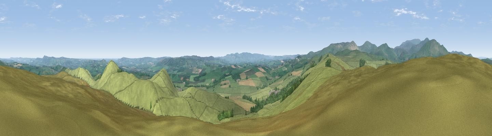

Cochrane Pike
#2299 in England · top 11% of its area beats it · near IngramWhere it is
The exact computed spot (NU 00775 13925). Click the marker for map links.
The view, rendered

A 360° render of this exact spot computed from the terrain model, tree cover and land cover — summer colours, afternoon light, calibrated against photographs of famous viewpoints. Real trees, hedges and buildings will differ in detail.
The panorama
Grey silhouette: terrain skyline in each direction (720 bearings, Earth curvature and refraction included). Dashed green: skyline with trees (+15 m) and buildings (+8 m) as obstacles. Blue strip: how far the ground is visible on each bearing.
Where the view opens
Wedge length = distance to the farthest visible ground on that bearing (vegetation-aware). Rings at 10, 25 and 50 km.
What fills the view
83% grassland · 9% cropland · 8% woodland
Angular shares of the visible panorama (visual magnitude), not map area. Landscape diversity 0.26 (0–1 Shannon).
Key numbers
More beautiful places nearby
The staircase of upgrades: each row has a higher view potential than everything closer. Driving times are estimates from straight-line distance, calibrated against real road routing — check an actual route before setting out.
| Place | Direction | Drive | Score |
|---|---|---|---|
| Viewpoint near Ingram | E · 1 km | ~4 min | 78.2 |
| Viewpoint near Ingram | NW · 5 km | ~11 min | 80.5 |
| Viewpoint near Ingram | NW · 6 km | ~12 min | 82.0 |
| Viewpoint c12273_7856 | W · 8 km | ~16 min | 83.7 |
| Viewpoint c12396_7887 | NW · 9 km | ~17 min | 85.7 |
| Viewpoint near Chillingham | NNE · 14 km | ~25 min | 88.1 |
| Long Side | SW · 114 km | ~139 min | 89.5 |
| Viewpoint near Easington | SE · 119 km | ~143 min | 90.2 |
55.41924, -1.98931 · source: dobih hill · position refined by local search. Computed location — check access rights before visiting.